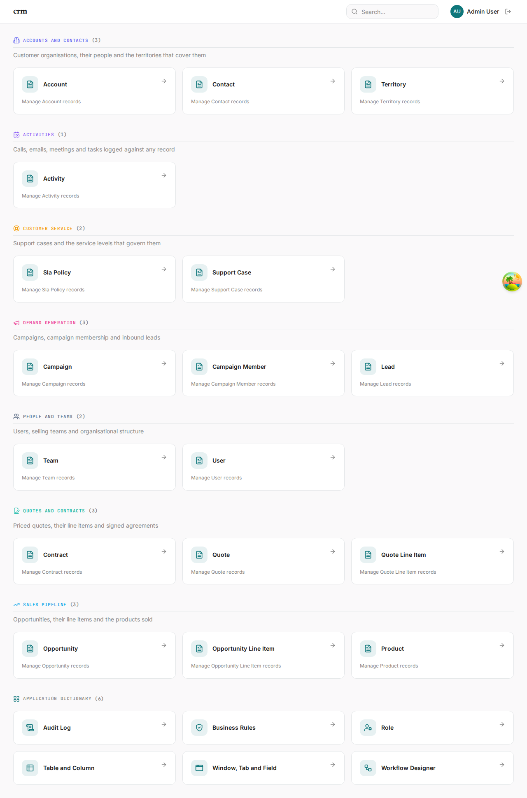
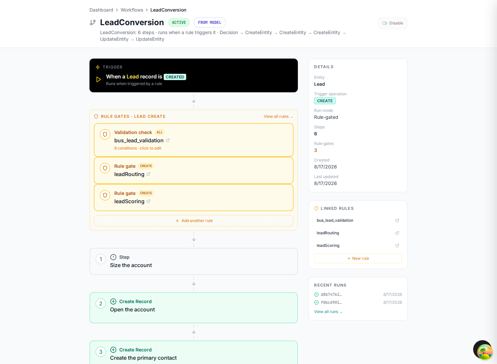
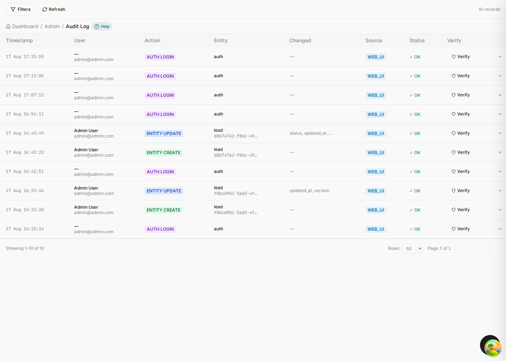
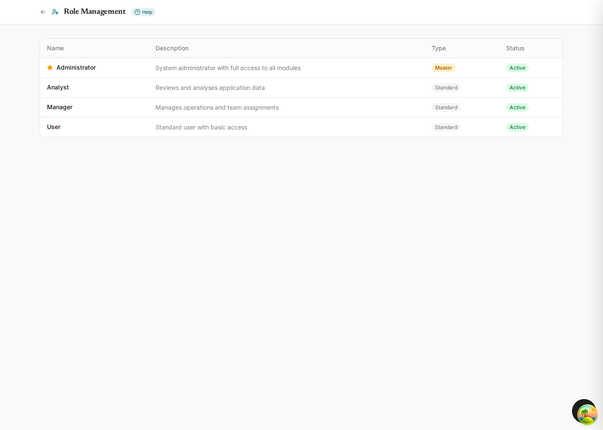

Build a CRM from one file
You write a single Mermaid document describing a business: its data, the decisions it makes, and the processes it runs. One command turns that into a working full-stack application — Postgres schema, NestJS API, TanStack Start front end, an admin dictionary, an audit trail and a workflow engine — with your rules and workflows already wired in and running.

The one idea worth understanding first
Most code generators stop at the schema: you describe tables, you get CRUD screens, and every rule your business actually runs on is left for you to write by hand. This one takes the same document further, because the same document says more.
An EML file (ERDwithAI Modeling Language) is valid Mermaid. It renders as diagrams in any Mermaid viewer, on GitHub, in your editor's preview. The generator reads three kinds of diagram out of it and treats each as a different layer of the application:
| You draw | The generator emits | In the running app |
|---|---|---|
erDiagram |
Migrations, DTOs, services, REST routes, list and form screens | Every entity, searchable, editable, audited |
flowchart marked kind: rules |
GoRules decision graphs seeded into sys_rule_definitions |
Decisions evaluated inside the transaction that saves a record |
stateDiagram-v2 |
BPMN definitions seeded into sys_workflow_definitions |
A status lifecycle the application applies and guards |
flowchart marked kind: saga |
One BPMN service task per %%step |
Multi-entity processes that create, update and delete across tables |
Semantics that Mermaid has no syntax for ride on %% comment directives — %%enum,
%%rule, %%hook, %%step. Mermaid ignores comments, so the document
still renders; the generator reads them, so the document still means something.
The diagram cannot drift from the application, because the diagram is the application. When someone asks "what happens when a lead is qualified?", the answer is a section of a file that a non-engineer can read and a renderer can draw — not a search through service code.
What you will build
An enterprise CRM covering the whole commercial lifecycle: marketing captures a lead, sales converts it into an account with a contact and an opportunity, the deal is quoted and contracted, and support handles cases against the account afterwards.


Behind those screens the model also carries the behaviour:
- Eight business rules — lead scoring and routing, a qualification gate, forecasting, a closed-won gate, discount policy, case triage, renewal risk.
- Five state machines — the lifecycle of a lead, an opportunity, a quote, a support case and a contract, each with role guards on its transitions.
- Seven hook workflows — the lifecycle handlers that normalize an email, mint an account number, block a delete, redact a phone number.
- Five sagas — lead conversion, quote approval escalation, critical case escalation, closed-won handoff and the renewal playbook.
What arrives with it, unasked
The screens below are not part of the CRM's specification. Nobody described a workflow editor, an audit trail or a help system in the model — they come with every application the generator produces, wired to the entities you did describe. This is the difference between generating CRUD and generating a system.

%%step directives in the model. Chapter 03.




[Manager]
is a permission check against this table at runtime. Chapter 06.
A REST API with Swagger, an admin dictionary of windows, tabs and fields, a rules engine with a decision table editor, a workflow engine with a visual designer, role-based access control, an append-only audit log, generated per-screen help, and an end-to-end test suite. Every one of them present in the application above, and none of them mentioned in the model that produced it.
How the guide is arranged
Each chapter builds one layer and then shows it running. You can read straight through, or jump to the layer you care about — every chapter names the exact file and lines it is talking about.
The data model
Entities, types, keys, relationships, enums, indexes and the dashboard grouping — the erDiagram section.
Business rules
Decision flows that score, route and gate — and the actions that let a rule reject a write or start a process.
Workflows
Status lifecycles, lifecycle hooks and multi-step sagas that write across entities.
Generate the app
The CLI, the browser path through the designer, and exactly what lands on disk.
Tour the app
Dashboard, lists, forms, lookups, dropdowns and the draft/final save cycle.
Application Dictionary
Windows, tabs and fields; the rule editor, the workflow editor, the audit log and per-screen help.
Watch it run
Qualify a lead and follow the rule, the action, the saga and the three rows it creates.
Reference
Every directive, type, modifier, cardinality, hook and step type on one page.
Before you start
You need three things running locally. Nothing else.
| Requirement | Why |
|---|---|
bun ≥ 1.3.14 | The repository is Bun-only. Never npm or pnpm. |
| PostgreSQL 16+ | The generated backend targets Postgres. One database for the generator, one per generated app. |
| The repository | bun install at the root once. |
The whole thing in five commands
# 1. check the model — the generator runs this for you, but it is fast and it is honest
bun language/checker.ts language/examples/crm.eml.mmd
# 2. generate the application
bun packages/generator/src/cli/generate.ts generate \
--input language/examples/crm.eml.mmd \
--output generated-projects/crm \
--name crm --records-per-entity 25 --force --no-setup
# 3. point it at a database
cd generated-projects/crm
cp backend/.env.example backend/.env # then set DATABASE_URL
# 4. create the schema and seed it
bun install && bun run db:setup
# 5. run it
bun run dev # API :4001, web :4000
Seventeen tables with their indexes and constraints, a REST API with Swagger, 192 front-end files,
39 seeded workflow definitions, 25 rule definitions, a seeded admin user, an audit log, and a
generated end-to-end test suite. Roughly ninety seconds, most of it bun install.
If you would rather see the model first and the commands later, start with chapter 01. If you want to watch the whole chain fire before you read a line of EML, jump to chapter 07.